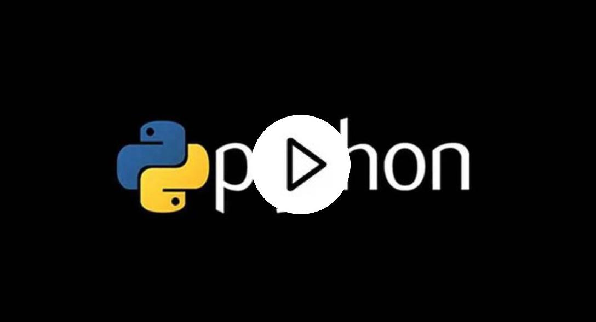

1. Introdução ao Python:
Conteúdo do Curso
1. Introdução ao Python:
Compreensão do que é Python, com orientações sobre a instalação e configuração do ambiente de desenvolvimento.
2. Sintaxe Básica:
Estudo das estruturas de dados, incluindo listas, tuplas e dicionários, além de uma introdução aos operadores utilizados na linguagem.
3. Controle de Fluxo:
Exploração das estruturas condicionais, como if e else, bem como dos loops for e while, fundamentais para a lógica de programação.
4. Funções:
Aprendizado sobre a definição de funções, argumentos, retorno de valores e o uso de funções lambda para simplificação de código.
5. Programação Orientada a Objetos:
Compreensão dos conceitos de classes e objetos, incluindo herança e encapsulamento, essenciais para a construção de software modular e reutilizável.
6. Desenvolvimento Web:
Introdução a frameworks populares como Flask e Django, oferecendo uma visão geral sobre como criar aplicações web com Python.
Curso Python
R$124,99
Desde a introdução até
desenvolvimento web.
- Certificado
- Professores excepcionais